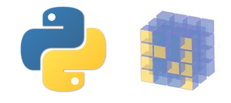

本文旨在给忘记Python和NumPy相关语法的你一个速查手册。

Python3语法
语法特点
- 句末不加分号
- 用tab对齐的方法行使c++里花括号的功能
- 太长需要分行书写时，行末尾需要有连接符，新行需要缩进
- 输入
help(classname)，即可得到那个类的使用帮助 - 输入
type(variablename)，即可得到该变量的类型 - 列表元组字典都可以相互嵌套
Print()用法
- 自动末尾追加
\n（可以设置关键字end=””使得末尾不自动追加换行符） Print(A,B)中间有个空格：A B- 可以直接打印列表[]
input()用法
- 用户输入函数，返回值就是输入的字符串（返回是字符串！），如：
str=input("Please input something:")
变量的用法
- 不用声明
字符串的用法
s="abc123"# 单引号双引号都可以s[2]取出第3个字符s.title()# 暂时每个单词首字母大写s.upper()# 暂时大写s.lower()# 暂时小写s1+s2# 连接字符串\n，\t等 # 转义符s.rstrip()# 暂时去除右边空白s.lstrip()# 暂时去除左边空白s.strip()# 暂时去除两边空白str(number)# 暂时转换为字符串，以便连接为字符串
数字的用法
- 可以计算复数
3/2为1.53**2为三的二次方7%3求余数（7%3==1）int('123')把字符串转整数，不能包含小数点float('12.3')转换为浮点数+=，-=，*=，/=，%=同c++的含义(但没有类似自增++的缩写用法)，注意：式子左边的变量要事先定义
注释的用法
- 井号#等效于c++里的//
- 三个单引号’’’等效于c++里的/*或*/
列表[]的用法【class的一种】
- 元素类型可以不同
a=[77,'AB']a[0]访问第一个元素a[-2]访问倒数第二个元素len(a)返回元素个数a.append(elem)末尾添加元素a.insert(pos,elem)在位置pos插入元素（列表头是pos==0，列表尾是pos==len(a)）del a[1]删除列表a里第二个元素elem = a.pop()弹出（删除）列表尾的元素并赋值给elemelem = a.pop(i)取出（删除）列表里索引为i（可为负数，表示倒数）的元素并赋值给elema.remove(value)删除列表a里第一个值为value的元素a.sort()永久性的升排序（数字增序或字典顺序）（参数填reverse=True则是降序）sorted(a)暂时性的升排序a.reverse()永久性的逆转序列min(a)返回列表最小值max(a)返回列表最大值sum(a)返回元素之和（元素必须是数字）a[i1:i2]返回子列表（又称切片），范围是索引i1<=i<i2，即不包括i2，好处是i2-i1就是子列表的元素个数a[:i2]等价于a[0:i2]a[i1:]等价于a[i1:len(a)]a[-3:]等价于a[len(a)-3:len(a)]，即返回末尾三个元素组成的列表b=a[:]列表深复制（因为切片并不与a共用内存空间）b=a列表浅复制（b是a的引用）
元组()的用法【class的一种】
- 元组里一个元素的值不可修改，但可以给整个元组赋值如：
a=(7,8,9,10) a=(1,2,3)# 定义元组aa[0]调用- 其他用法和列表[]类似
字典{}的用法【class的一种】
即键值表，并不关心多对键值对的顺序，可修改
rect = {'x':10, 'y':5, 0:20}上述字典rect里有三个键（key），分别是’x’，’y’和0。作为下标带入rect[key]就可以得到相应的值
新建键值对：直接赋值即可（如
rect['newkey']='newval'）删除键值对：如
del rect['newkey']
集合{}的简单介绍【class的一种】
- 通过函数
set(a)可以将数组a的元素去除重复，返回一个集合类型的量
逻辑的用法
- True真，False假
- 空列表==False，非空列表==True（如while mylist然后逐个pop实现逐个取出）
- 空字符串==False，非空字符串==True
- ==判断等号
- !=不等号
- and与，or或，not非
- in被包含（如elem in a），not in不被包含
for循环的用法
- 基本格式：
例子：for elem in arr: print(elem)
for elem in a# a是列表for i in range(1,11)# i=1~10for key,val in a.items()# a是字典for key in a.keys()# a是字典for val in a.values()# a是字典for key in a# a是字典(仅遍历键key)
- 注意事项：
- for语句行末尾有冒号，下一行tab缩进（不推荐space缩进）
- 循环退出后elem的值可访问，且值是a的最后一个元素a[-1]
range(start,end,step)返回迭代对象(区间[A,B))，用作for循环的循环域，不是列表,（但通过list(range(...))可以变为列表）a=[val**2 for val in range(1,11)]列表解析，用于快速生成列表[1，4，…,100]dict.items()返回一个元素是元组(key_i,val_i)的dict_items对象（而list(dict.items())才是返回真正的列表）dict.keys()返回一个元素是键的dict_keys对象（而list(dict.keys())才是真正的列表）dict.values()返回一个元素是值的dict_values对象（而list(dict.values())才是真正的列表）
if语句的用法
- 例子：
if a==1: #... elif a==2: #... else: #...
while循环的用法
- 例子
while boolvar: #TODO - 用break退出while或for循环
- continue跳过此次循环，进入下一轮
函数的用法
- 例子
def 函数名(参数表): # 参数可以是列表（与实参共用内存空间，除非传递副本如a[:]） # 计算 return ReturnVal # 非必需，ReturnVal可以是字典 - 有形参与实参之分，实参传值给形参进入函数内部
- 参数传递的两种方法：
- 按参数表的顺序依次传递如f(2,5,-5)
- 给形参赋值，如f(x=3,y=7) # 赋值顺序不重要
- 参数可以有默认值，如def f(x,y=0)，默认值要列在最后
- 传递任意数量的实参的写法：(“任意数量的参数*inputs”必须放在参数表的末尾)
def f(*inputs): # 将多个输入的参数封装到一个名为inputs的元组里，调用例子：f(4,8,7,1,3) print(inputs) - 传递任意数量的关键字实参的写法：（同理，放在参数表的末尾）
def f(x,**dict): #获得x和字典dict（调用例子：f('3',name='karbo',age=99)）
类的用法
- 例子：
class Rect(): # 约定：首字母大写的是类（推荐驼峰命名法） - 类里的函数（方法）必定包含参数self
def __init__(self, x=1, y=1): # 构造函数（不包含return语句） self.x = x #有默认值1 self.y = y #有默认值1 self.is_active = True # 置默认值 def compute_area(self): if self.is_active: return self.x * self.y return 0 - 使用方法
MYRECT = Rect(3) #用赋值的方法创建对象（不必传递self参数） print(MYRECT.compute_area()) # 调用函数并打印 - 继承的例子：
class Cube(Rect): #Cube继承自Rect def __init__(self, x=1, y=1, z=1): super().__init__(x, y) #初始化继承到的内容（通过super()函数的返回值可以访问继承到的东西） self.z = z - 注意事项：
- 子类同名方法会覆盖父类的
- 类的成员可以是类
模块的用法
- 在模块文件（.py）写入函数，然后在另一个.py文件import模块文件名即可。
如：#在模块PRINTABC.py def printabc(): print('abc') #调用者main.py import PRINTABC #import模块 PRINTABC.printabc() #要加上作用域PRINTABC. - import其他用法：
- 使用模块别名:import tensorflow as tf # 调用时需要加上tf.
- 显式导入特定函数或类:from tensorflow import constant, Session # 调用时不需加tensorflow.
- 显式导入特定函数或类并使用别名:from tensorflow import constant as c, Session as s # 调用时不需加tensorflow.
- 显式导入所有:from tensorflow import * # 调用时不需加tensorflow.且容易重复命名造成覆盖
- 模块中也可以import哦
文件操作的用法(文本操作)
- 【读】
- 全部一次性读取：
文件路径是相对路径或绝对路径with open('a.txt') as myfile: #使用with使得文件在不再被调用后自动关闭（不用with的写法：打开myfile=open("a.txt")关闭myfile.close()） print(myfile.read()) #read()函数将内容全部读取 - 逐行读取：
for line in myfile: #读取一行到line里，注意：它不抛弃末尾的\n，即line字符串末尾 有换行符 - 读取所有行到一个列表中：
arr_lines = myfile.readlines() #一行为一个元素的列表，同理不抛弃末尾的\n
- 【写】
with open('a.txt', 'w') as myfile: # 可选项：读r（默认），写w，追加a，读写r+ myfile.write('hello!') # 只将内容写入，并不会自动添加\n
- 注意事项：
- 以’w’方式会重写文件（不存在则创建文件）
- 以’a’方式会追加到文件尾（不存在则创建文件）
存储数据结构（JSON）：
- 完整例子：
import json def READ_JSON_FILE(FILENAME): with open(FILENAME) as myfile: return json.load(myfile) #返回读取到的文件内容 def WRITE_JSON_FILE(WHAT, FILENAME): with open(FILENAME, 'w') as myfile: json.dump(WHAT, myfile) #将WHAT写入路径为FILENAME的文件里异常机制
- 例子：
try: with open('a.txt') as myfile: contents = myfile.read() except FileNotFoundError: #try失败后 print('Sorry, the file not found.') #换成语句pass可以跳过（pass相当于占位符，不起作用，是空语句） else: #try成功后执行else部分 print('It has', str(len(contents.split())), 'words.') - 常见的异常有：
| 错误类型 | 解释 |
|---|---|
| OverflowError | 数值运算超出最大限制 |
| ZeroDivisionError | 除(或取模)零 (所有数据类型) |
| IOError | 输入/输出操作失败 |
| IndexError | 序列中没有此索引(index) |
| FileNotFoundError | 文件未找到 |
| NameError | 访问一个不存在的变量 |
NumPy语法
ndarray基本属性
ndarray.ndim维度ndarray.shape形状尺寸ndarray.size元素总数（等于shape的乘积）ndarray.dtype元素的类型（如：numpy.int32，numpy.int16，numpy.float64）ndarray.itemsize每个元素所占的字节数（如float64为8，相当于ndarray.dtype.itemsize）ndarray.data数据内存区域
ndarray生成
array()是函数，ndarray()是类
- list转ndarray
a = np.array([1,2,3,4]) b = np.array([[1,2],[3,4]], dtype=complex) #显式指定为复数类型 c = np.array([i for i in range(1, 11)]) #0~10 - arange生成
a = np.arange(15) #0~14 b = np.arange(5, 10) #5~9 c = np.arange(1, 10, 0.5) #1~9.5，间隔0.5 - zeros、ones、eye、empty生成（默认是np.float64类型）
a = np.zeros([2, 3], dtype=np.int64) #指定为np.int64类型，元素全是0 b = np.ones([2, 3]) #默认为np.float64类型，元素全是1 c = np.eye(3) #默认为np.float64类型，大小为3*3的单位矩阵 d = np.empty([2, 3], dtype=complex) #指定为复数，元素未初始化（依据内存状态） - linspace生成
返回等间隔分布的数组a = np.linspace(1, 10, 5) #a == [ 1. 3.25 5.5 7.75 10. ]
ndarray的操作
- reshape
注意reshape函数返回的是引用，指向同一内存空间。
若要不同请使用深拷贝，请使用深拷贝.copy()。
输出效果（a、b和c都一样）：x = np.array([i for i in range(1, 13)]) #生成长度为12的ndarray a = np.reshape(x, [3, 4]) #执行后x的值仍不变 b = x.reshape([3, 4]) #执行后x的值仍不变 c = x.reshape(3, 4) #执行后x的值仍不变[[ 1 2 3 4] [ 5 6 7 8] [ 9 10 11 12]] - 读取单个元素
a[1,2] #取出第2行第3列的元素（建议） a[1][2] #取出第2行第3列的元素（先取出第二行[ 5 6 7 8]，再取出第三个元素7） - 读取整行/列
a[:,1] #取出第2列（建议） a[:][1] #取出第2行（注意：a[:]等价于a） a[1] # 取出第2行（建议） a[1,:] #取出第2行（建议） a[1][:] #取出第2行（注意：[:]不起作用） - 拷贝
ndarray深拷贝请使用y=x.copy()，而不是y=x[:]！
对数值型的赋值都是深拷贝
拷贝实验一：
import numpy as np
x = np.array([i for i in range(1, 13)])
a = x.reshape([3, 4])
b = a #b是a的引用
b[0, 0] = 99 #实质上是修改了a
输出结果：
[[99 2 3 4]
[ 5 6 7 8]
[ 9 10 11 12]] #a被修改了
print(a)拷贝实验二：
import numpy as np
x = np.array([i for i in range(1, 13)])
a = x.reshape([3, 4])
b = a[0] #取出a第1行的引用
b[0] = 99 #实质上是修改了a的第1行的第1个元素
print(a)
输出结果：
[[99 2 3 4]
[ 5 6 7 8]
[ 9 10 11 12]] #a被修改了拷贝实验三：
import numpy as np
x = np.array([i for i in range(1, 13)])
a = x.reshape([3, 4])
b = a[0, 0] #数值型赋值，b不是a[0,0]的引用
b = 99 #仅修改了b
print(a)
输出结果：
[[ 1 2 3 4]
[ 5 6 7 8]
[ 9 10 11 12]] #a保持原样拷贝实验四：
import numpy as np
x = np.array([i for i in range(1, 13)])
a = x.reshape([3, 4])
b = a[:] #这种操作对ndarray无效，仅对list有效
b[0, 0] = 99
print(a)
输出结果：
[[99 2 3 4]
[ 5 6 7 8]
[ 9 10 11 12]] #a被修改了拷贝实验五：
import numpy as np
x = np.array([i for i in range(1, 13)])
a = x.reshape([3, 4])
b = a.copy() #使用了ndarray的深拷贝
b[0, 0] = 99
print(a)
输出结果：
[[1 2 3 4]
[ 5 6 7 8]
[ 9 10 11 12]] #a保持原样- 连续区域赋值
import numpy as np x = np.array([i for i in range(1, 13)]) y = x.reshape([3, 4]).copy() x[3:6] = 99 y[1:3, 0:3] = 99 print(x) print(y)
输出结果：
[ 1 2 3 99 99 99 7 8 9 10 11 12]
[[ 1 2 3 4]
[99 99 99 8]
[99 99 99 12]]
6. 逻辑运算
```python
import numpy as np
x = np.array([i for i in range(1, 13)])
y = x.reshape([3, 4]).copy()
a = y >= 8
b = y.copy()
b[a] = 0
print(a)
print(b)
输出结果：
[[False False False False]
[False False False True]
[ True True True True]]
[[1 2 3 4]
[5 6 7 0]
[0 0 0 0]]- ndarray保存到文件
- 单个ndarray的二进制保存（.npy后缀）
import numpy as np x = np.array([i for i in range(1, 13)]).reshape([3, 4]) np.save('x.npy', x) y = np.load('x.npy') print(y)
输出结果：
[[ 1 2 3 4]
[ 5 6 7 8]
[ 9 10 11 12]]
- 单个ndarray的文本保存（.txt后缀）
```python
import numpy as np
x = np.array([i for i in range(1, 13)]).reshape([3, 4])
np.savetxt('x.txt', x)
y = np.loadtxt('x.txt')
print(y)
输出结果：
[[ 1. 2. 3. 4.]
[ 5. 6. 7. 8.]
[ 9. 10. 11. 12.]]- 多个ndarray的二进制保存（.npz后缀）
import numpy as np a = np.array([[1, 2, 3], [4, 5, 6]]) b = np.arange(0, 1.0, 0.1) c = np.sin(b) np.savez("result.npz", a, b, sin_array=c) r = np.load("result.npz") print(r["arr_0"]) print(r["arr_1"]) print(r["sin_array"])
输出结果：
[[1 2 3]
[4 5 6]]
[0. 0.1 0.2 0.3 0.4 0.5 0.6 0.7 0.8 0.9]
[0. 0.09983342 0.19866933 0.29552021 0.38941834 0.47942554
0.56464247 0.64421769 0.71735609 0.78332691]
# 相关链接
1. [Python 3.7.3 文档](https://docs.python.org/zh-cn/3/)
2. [Python 教程](https://docs.python.org/zh-cn/3/tutorial/)
3. [NumPy Tutorial](https://www.numpy.org/devdocs/user/quickstart.html)
4. [NumPy for Matlab users](https://www.numpy.org/devdocs/user/numpy-for-matlab-users.html)